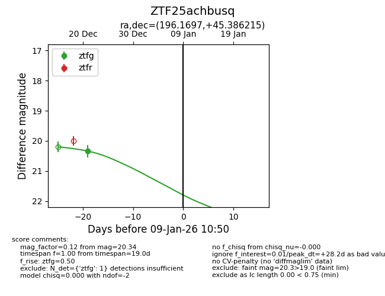
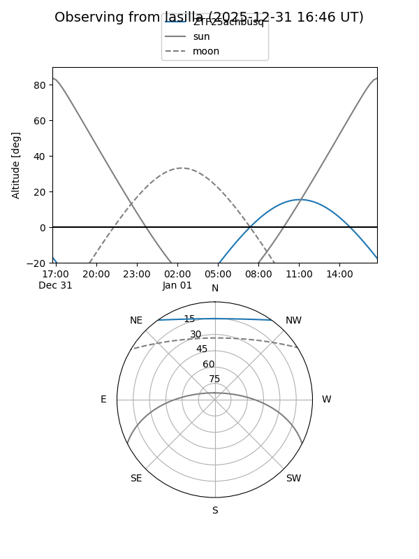
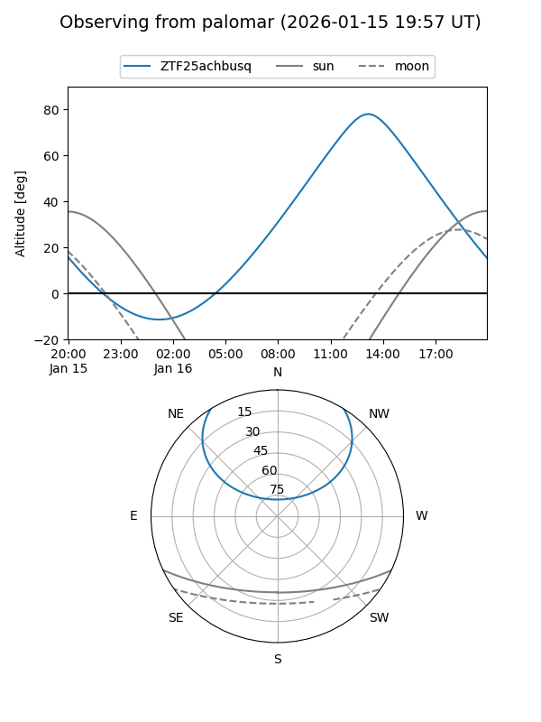
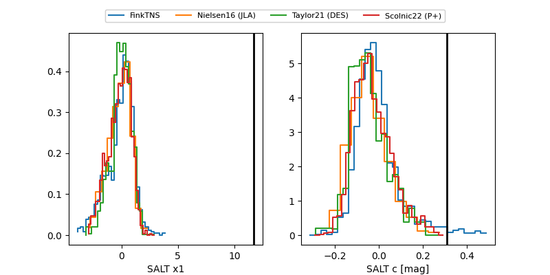

ZTF25achbusq
Target ZTF25achbusq at 2026-01-08 10:31
Aliases and brokers:
FINK:
Lasair:
ALeRCE:
alt names
ZTF25achbusq (ztf,fink_ztf)
Coordinates:
equatorial (ra, dec) = 196.1697,+45.38621
equatorial (HMS+DMS) = 13:04:40.73,+45:23:10.37
galactic (l, b) = (115.5688,+71.55226)
Flags:
Photometry:
last ztfg=20.34
1 ztfg detections
Lightcurve

Visibility


Additional plots
